Generalizes across simulation and real-world settings.
Consistent performance across seen tasks, randomized scenes, and novel environments.
| Benchmark | Split | Success |
|---|---|---|
| LIBERO | seen | 98.8 |
| LIBERO-Plus | unseen | 85.8 |
| RoboTwin — clean | seen | 85.8 |
| RoboTwin — randomized | unseen | 75.7 |
| RoboCasa365 | seen | 48.1 |
| Real robot — novel environments | unseen | 70.0 |
Full comparisons against prior work are in the paper.
A single goal says where. A chain says how.
Dense video rollouts guide well but are slow; imagining nothing is fast but blind past the next chunk. ProWAM predicts a few sparse sub-goals, each pinned to a relative progress r, and grounds every action in them.
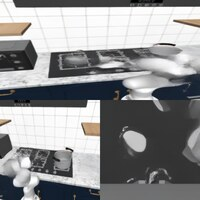
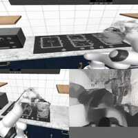
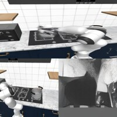
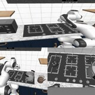
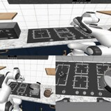
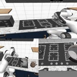
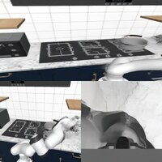
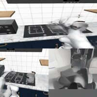
pick the kettle, place it on a burner
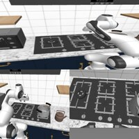
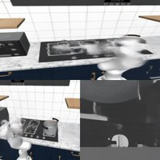
t frame index · r relative progress, re-anchored to the latest observation every replan
attention mask · query → key
Progress is relative, so the plan re-anchors every replan.
Every replan starts from a fresh observation at r = 0 and re-imagines the chain. Rollouts play on their own — drag to step through sub-goals, or jump to a replan.
“turn on the stove and put the moka pot on it”
“use both arms to place the burger and the fries on the green tray”
“grab the hamburger and the fries carton, then set them on the green tray”
“move the red and green blocks to the center and place green atop red”
“move the red block to the center, then put the green block on top”
“pick up the bowls on the counter and stack them on top of one another in the open cabinet. Place the smaller bowl on top of the larger bowl”
“pick up the knife from the drawer and place it on the cutting board. Then place the meat from the plate to the cutting board”
“grab a lemon wedge from the fridge and one ice cube from the ice bowl, and put them in the glass of lemonade”
On a real robot, in a scene it has never seen.
Zero-shot rollouts on a physical arm in a novel environment. Sped up to fit; exterior and wrist cameras play in sync.
Planning that was never taught, only learned.
Stage 1 sees only action-free video — no actions, no policy, no simulator. Given a first frame and an instruction, it imagines the scene at each progress point. None of these scenes were in its training data.
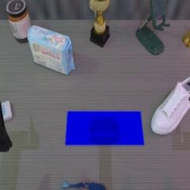
r = 0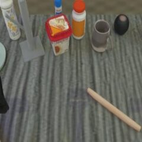
r = 0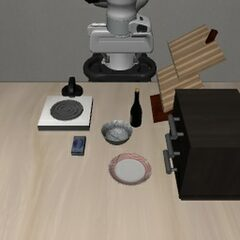
r = 0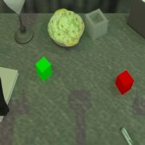
r = 0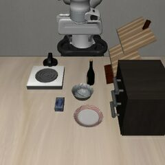
r = 0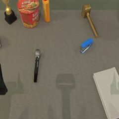
r = 0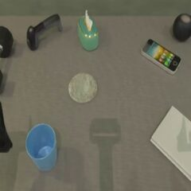
r = 0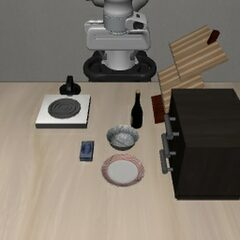
r = 0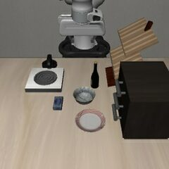
r = 0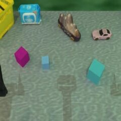
r = 0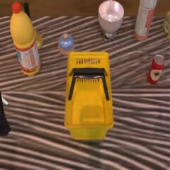
r = 0Every tile is out of distribution · first frame at r = 0, then imagined milestones at r = 0.1 … 0.9 · hover to pause